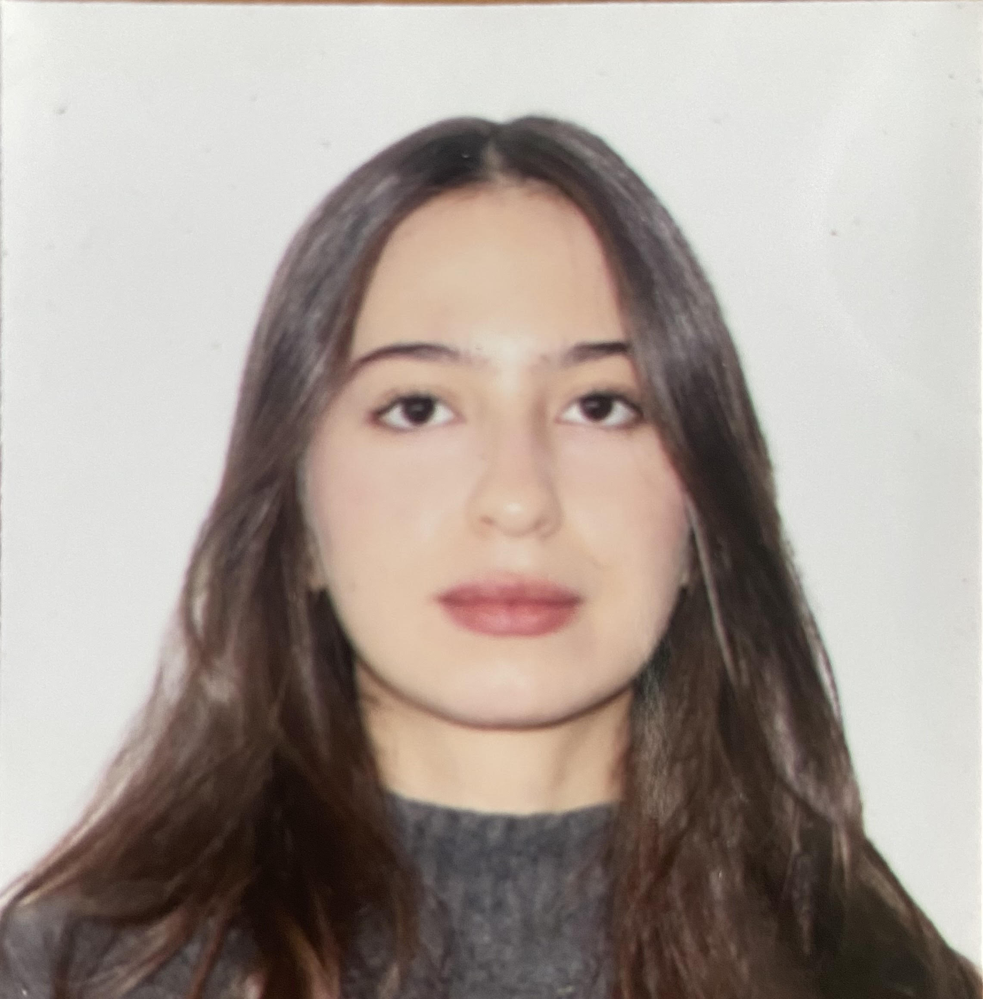

Biografia
Me llamo Candela Olivieri, tengo 19 años y nací el 9 de mayo del 2005 en la ciudad de La Plata, Argentina. Realicé mis estudios de jardín, primario y secundario en el colegio Nuestra Señora del Carmen en Tolosa. Mi padre falleció cuando tenía 11 años, por lo que fui criada por mi madre y actualmente vivo con ella. En mis tiempos libres disfruto ir a clases de cerámica, leer y escuchar música. Mis géneros musicales favoritos son R&B y pop, y mis artistas preferidos son Frank Ocean y A$AP Rocky. En cuanto a la lectura, suelo inclinarme por obras de Pizarnik y Sylvia Plath. Una de mis actividades favoritas es tomar café con amigos, un momento que valoro mucho. Estoy estudiando Relaciones Públicas y Comunicación Institucional en la UADE, y los primeros meses del proximo año planeo irme a vivir a Estados Unidos por 12 meses.
